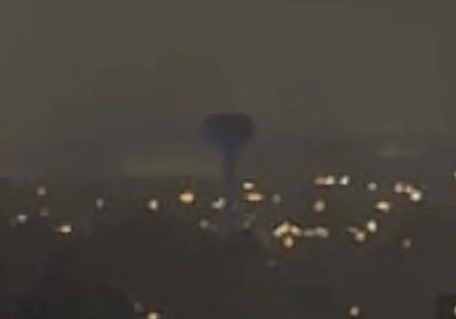

Transporte, Condado de Leonard
Water Tower
Lugar de transporte de Leonida descoberto no mapa de GTA VI, em o condado de Leonard.

O essencial
Water Tower é um lugar de transporte de Leonida, situado em o condado de Leonard no mapa do site. Posição ou existência deduzida pela comunidade, a considerar com cautela: é o status “Reconstrução da comunidade” do mapa. A comunidade também observa: relatado como demolido, posição não confirmada. Tipo registrado pela comunidade: infraestrutura. A comunidade vê nele uma versão de Sebring Water Tower, Ethiopia Blvd, Sebring, FL 33875, USA, um lugar real que parece tê-lo inspirado. Ele aparece em uma captura oficial, visível nesta página. Bem perto, o mapa situa Train Bridge (a noroeste), Edifício L2393 (a sudeste), Train Station (nome suposto, a leste).
Identidade
| Nome | Water Tower |
|---|---|
| Categoria | Transporte (infraestrutura) |
| Condado | Condado de Leonard |
| Status | Reconstrução da comunidade (relatado como demolido, posição não confirmada) |
| Lugar real que parece tê-lo inspirado | Sebring Water Tower, Ethiopia Blvd, Sebring, FL 33875, USA (identificação da comunidade) Ver no Google Maps ↗ |
| Posição no mapa | x 2840, y 2689 (centralizar o mapa) |
| Fonte | Capturas e trailers oficiais; identificação de gtadb.org e seus colaboradores (CC BY 4.0) |
No mapa de Leonida

Dados: GTA VI Landmarks Data, gtadb.org e seus colaboradores, CC BY 4.0, modificados para o Leonidakit. Licença: creativecommons.org/licenses/by/4.0
Lugares mais próximos no mapa
Relatar um erro nesta páginaO que está confirmado e como verificamosProcedência e créditos
A calculadora
Quanto tempo de jogo para se instalar por aqui?
Uma casa, uma loja, uma garagem: escreva o preço que você imagina, seu dinheiro e o que ganha por sessão, e a calculadora diz quanto tempo leva.